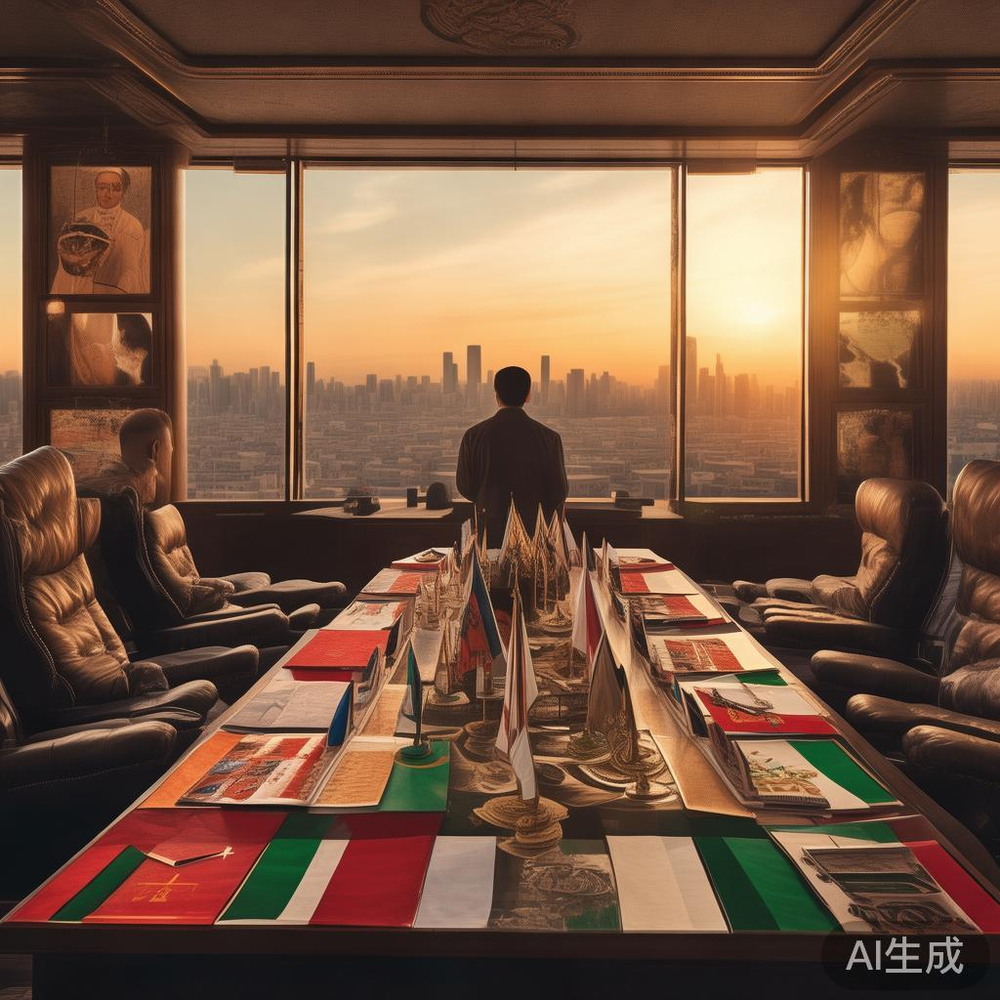
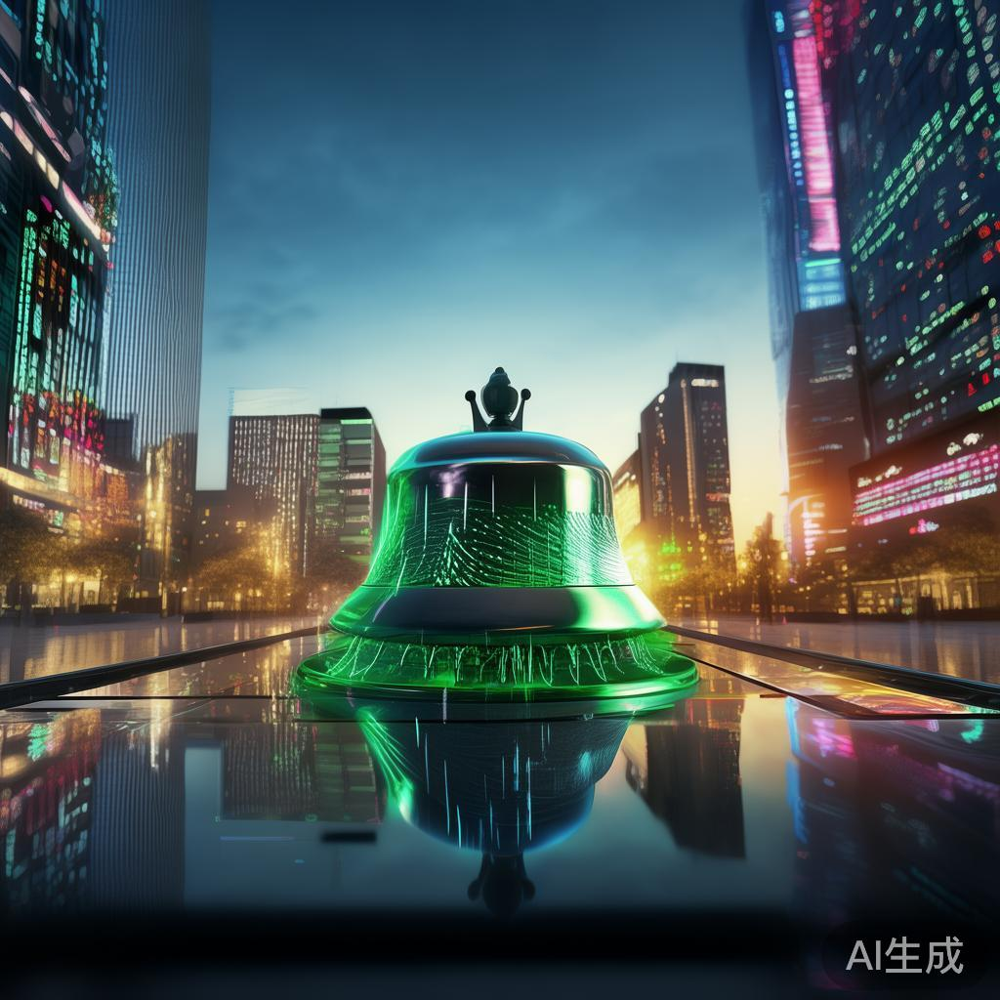
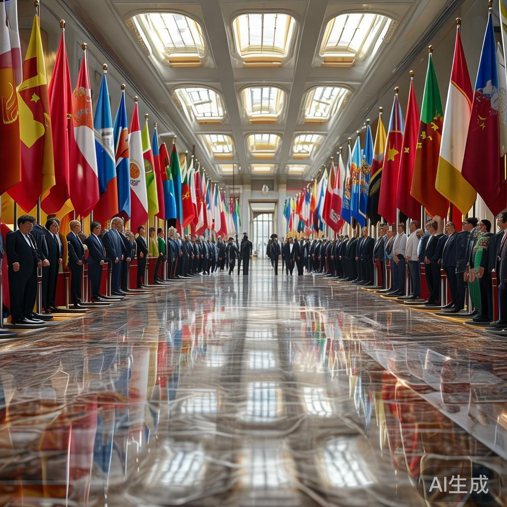
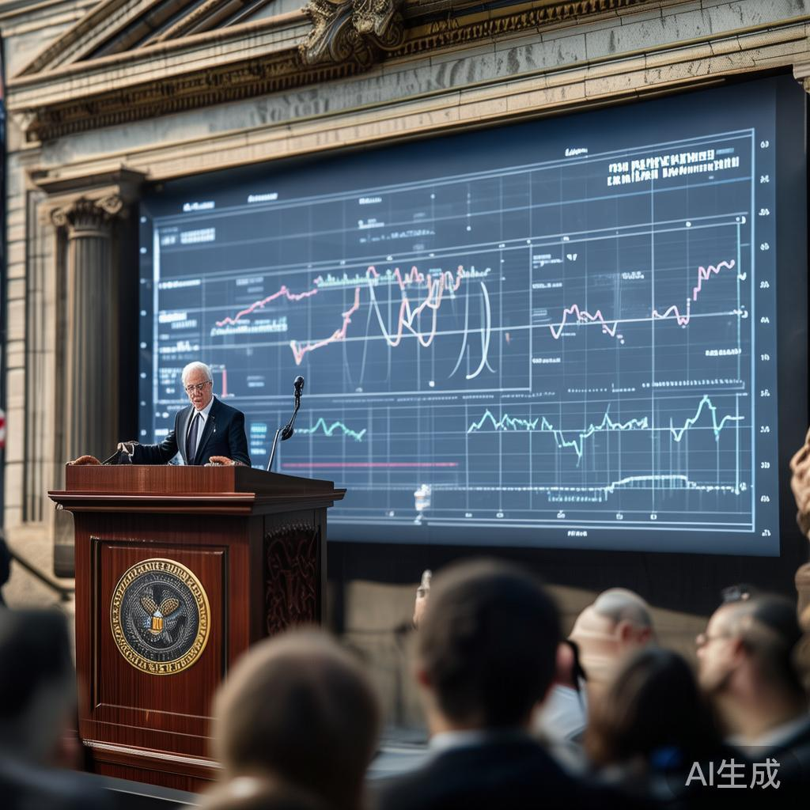
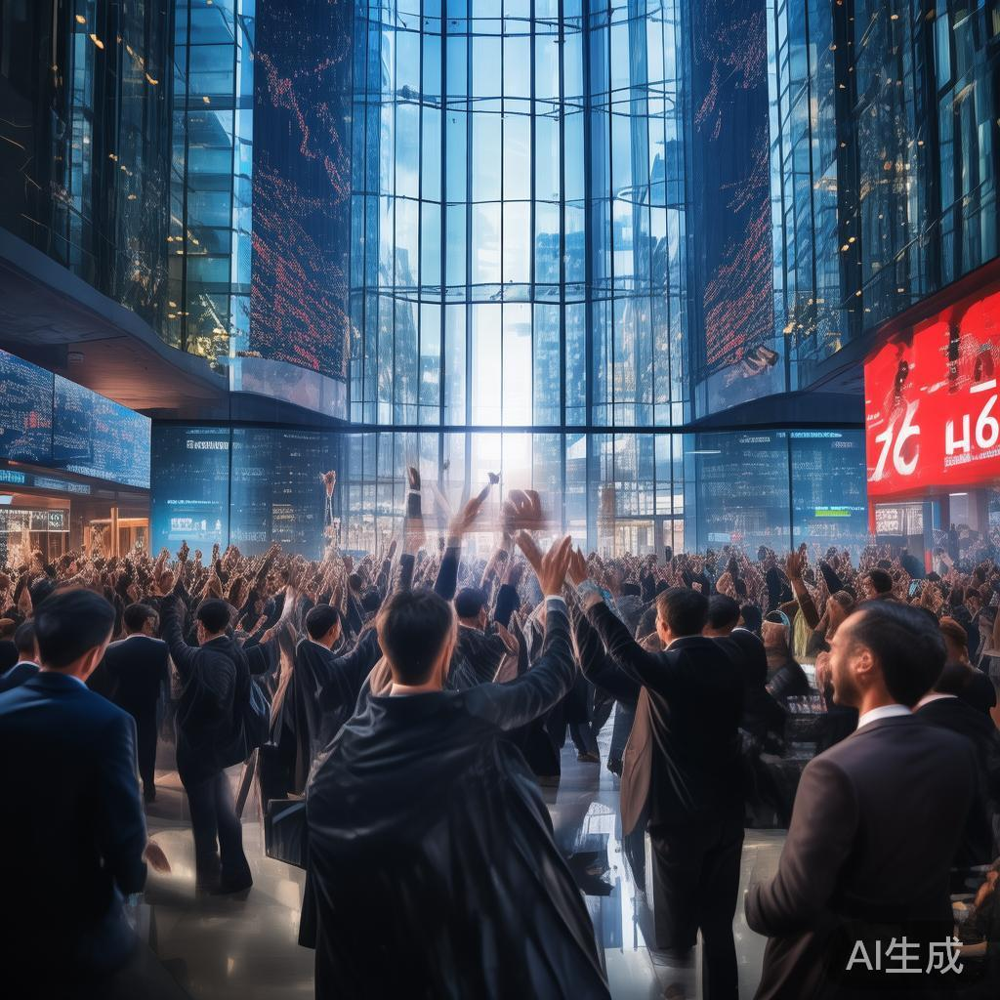
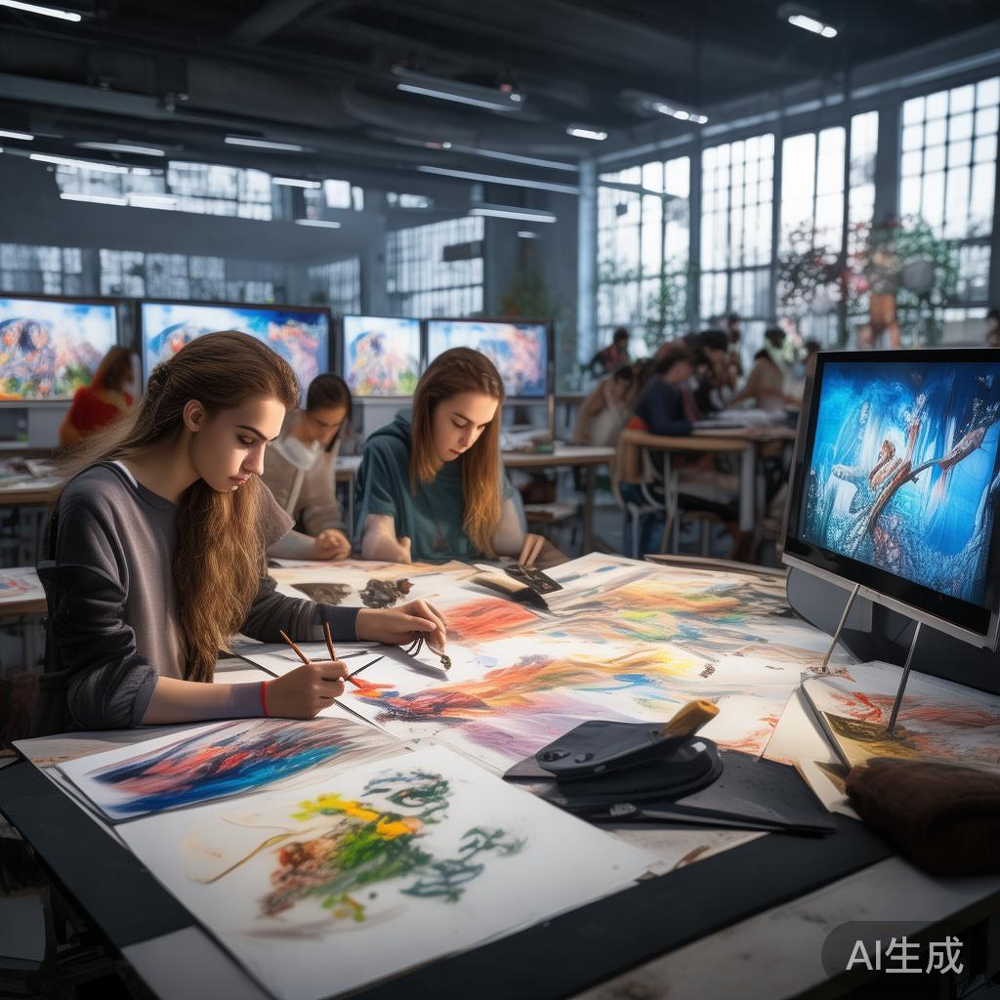
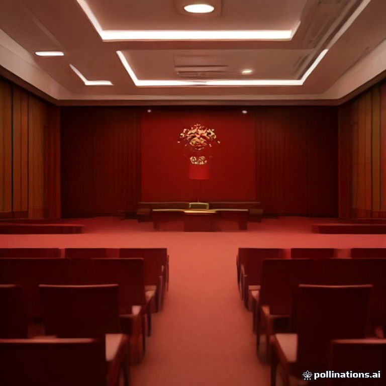
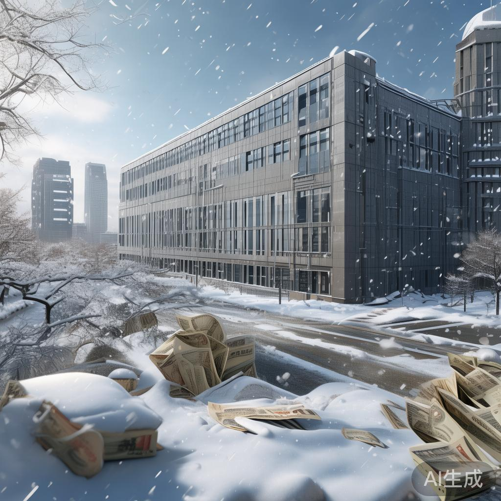
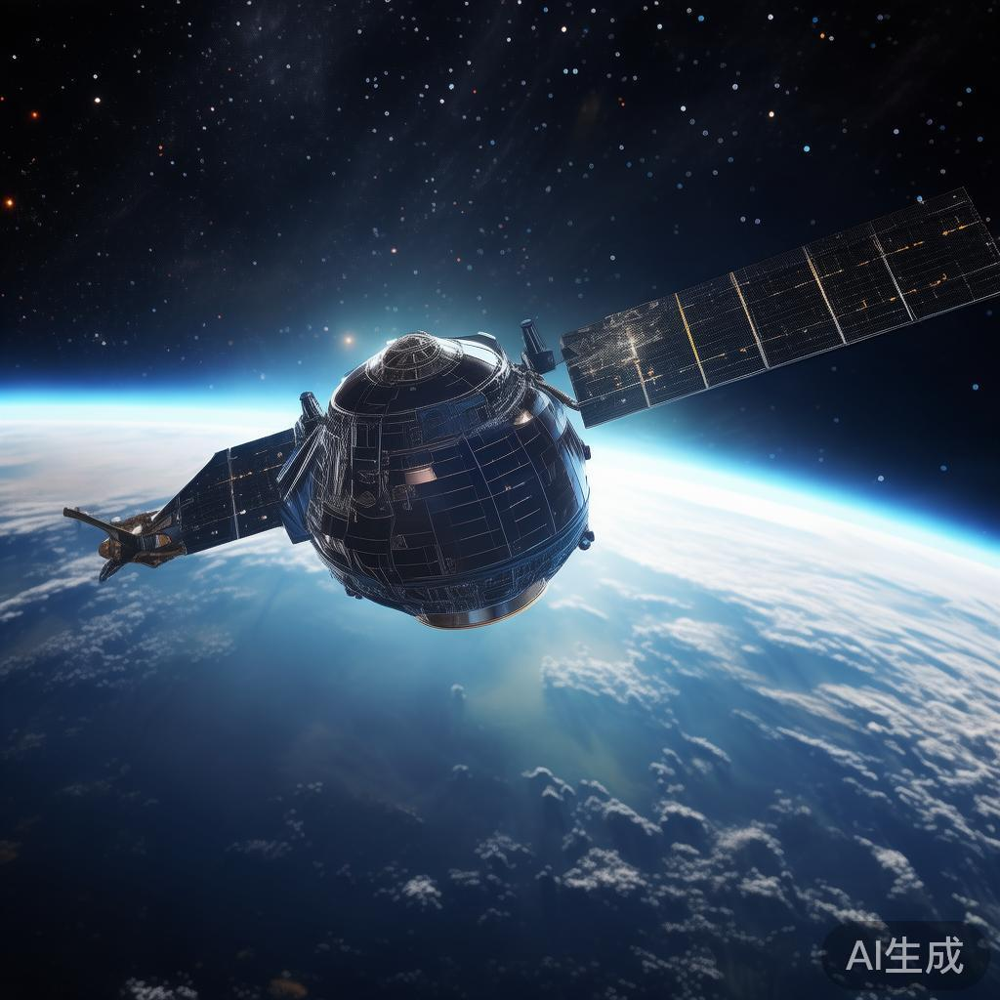
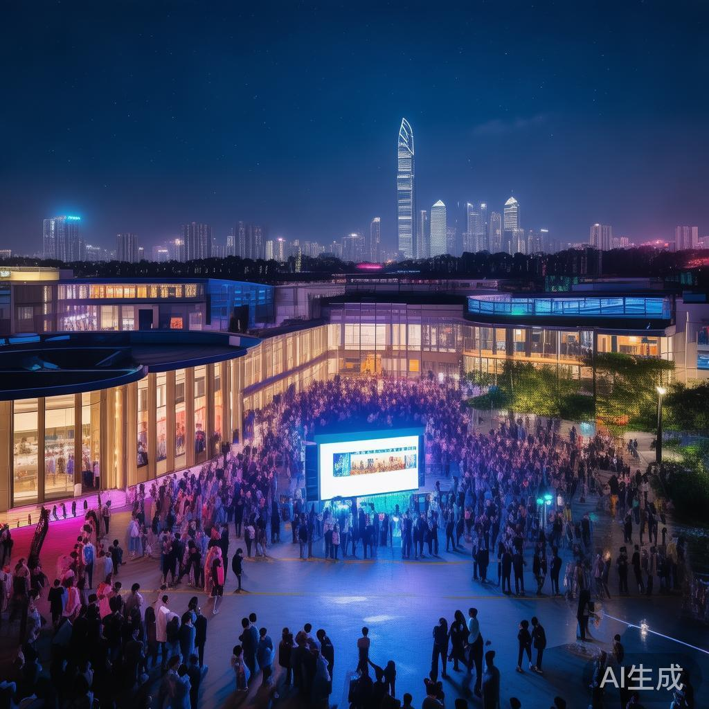

01
特朗普谈伊朗战争：应盟友请求采取“更文明”方式
特朗普在预录采访中称“我本可以立刻结束这场战争”，但应所保护国家的请求，正采取耗时更长、稍“文明”一些的方式。他透露沙特请求让局势暂时维持现状，卡塔尔、阿联酋和巴林也更倾向“等待期”做法，“我照做了，但不确定是否同意”。
国际


特朗普在预录采访中称“我本可以立刻结束这场战争”，但应所保护国家的请求，正采取耗时更长、稍“文明”一些的方式。他透露沙特请求让局势暂时维持现状，卡塔尔、阿联酋和巴林也更倾向“等待期”做法，“我照做了，但不确定是否同意”。
英伟达周四任命资深CFO科莱特·克雷斯为临时CEO，带领公司度过黄仁勋突然辞职引发的动荡。59岁的克雷斯2013年加入英伟达，是除黄仁勋外唯一定期在财报会上发言的高管，下周二将主持财报电话会议。黄仁勋从未制定过明确的继任计划。

周五日韩股市开盘齐涨：日经225指数开盘报61223.41点，涨0.66%；韩国KOSPI指数开盘涨2.1%至5452.41点，三星、SK海力士股价均涨3%。美股期指方面，纳指100期货涨0.56%，标普500期货涨0.31%，日经期货早盘涨1.3%。

国际电信联盟2026年全权代表大会期间，中国代表团11月12日在卡塔尔多哈举行招待会。工信部副部长熊继军强调，中方始终坚定支持联合国在国际事务中发挥核心作用，支持国际电联推动全球数字发展与治理合作。
为期两天的俄美乌三方会谈11月11日在阿布扎比结束，各方就大规模交换被俘人员达成协议，但在结束冲突、领土争议、乌克兰安全保障等核心议题上分歧依旧。俄美互动令乌克兰和欧洲坐立难安，担心欧洲安全版图被“重画”。

纽约联储主席威廉姆斯密集表态：通胀顽固且居高不下，美联储需随时间推移采取行动使通胀率回到2%，但行动不能损害劳动力市场。他称美国经济正在走强但并未过热，增长一直强劲，货币政策仍需努力达到合适水平。

据知情人士透露，Anthropic的首次公开招股已吸引约六倍超额认购，投资者对这宗有望成为有史以来规模最大股票发行交易之一的兴趣火热。此前该公司IPO前已追加超100亿美元算力订单。

媒体关注AI对美术教育的冲击。清华大学美术学院院长吴琼在美院成立70周年发展大会上表示，人工智能可以在几秒钟内生成上千个方案，但回答不了“为谁”而做的问题，美术教育的价值坐标面临重构。
由于美国通胀持续，市场预期美联储或进一步收紧货币政策，美元走强、美债收益率走高，黄金、白银期价12日大幅下跌，纽约商品交易所12月黄金期价再度跌破3900美元/盎司关口。
针对特朗普以关税施压墨方处理移民问题的言论，墨西哥总统辛鲍姆12日回应称，自特朗普上任以来，未有任何一支移民大篷车队伍抵达北部墨美边境，驳斥了美方借移民问题加征关税的理由。
知情人士称，三星电子正洽谈收购数据中心冷却系统制造商摩丁制造，交易最快未来几周达成，摩丁市值约56亿美元。谈判凸显AI市场相关并购升温，大金工业、LG电子、维谛技术均在竞逐。受消息提振，三星股价上涨3%。
Wind数据显示，周五共有15家公司限售股解禁，合计解禁量1.02亿股，按最新收盘价计算合计解禁市值29.46亿元。中邮科技、天工股份、四方股份解禁量居前，解禁股份数量最多。

福建省两岸标准共通标准化技术委员会成立大会暨第一届全体委员会议12日在福州举行。会上，委员会主任委员蔡晓季与福建省台办副主任陈志勇共同为标委会揭牌，将推动两岸标准共通、融合发展。

日本政府批准动用6520亿日元储备金用于冬季补贴支出，这是日本政府为应对冬季民生支出压力作出的最新财政储备安排。

国内首颗空间碎片监测商业卫星“甘德一号01星”此前因追踪SpaceX“猎鹰9号”火箭残骸撞月轨迹引发关注。该卫星搭载星上AI算力、主打“天感天算”，填补国内商业天基碎片监测空白。在轨道资源日趋拥挤、巨型星座批量组网背景下，空间碎片治理正从远期构想转向产业刚需。
华泰证券研报称，前期油价冲击叠加旺季顺价较弱，三季度航空板块重仓持股占比进一步下降，关注度与预期处于低位。不过基本面改善信号陆续出现，油价下跌、票价改善、监管强化反内卷导向等因素正驱动板块反弹。
据报道，预测市场平台Kalshi已终止与美国总统特朗普长子小唐纳德·特朗普的顾问合作，原因与其风投公司增持竞争对手Polymarket股份有关。

腾讯11月11日迎来成立28周年，马化腾携核心高管与全体员工线上对话。他提示风险，要求员工适应AI变化，称这是腾讯第一次做重资产业务，财务和组织打法不同，必须更大推动组织变革；提醒“浪已杀过来”，要从陆战转海战，“坦率说现在都有点晚”。
野村控股推出其首只在美国上市的主动管理型日本股票ETF，旨在利用从麦格理美国资管业务获得的分销网络触达美国零售投资者，此举是野村扩大全球资产管理业务战略的一部分。
10月末的尼泊尔努瓦果德县比德尔镇，崔树里河上的新吊桥挤满了人。德赛节刚过、排灯节将至，正值尼泊尔一年中最重要的节庆时节，两支中尼科考队沿洪流退去后的河谷继续考察，寻找答案。
💬 评论区